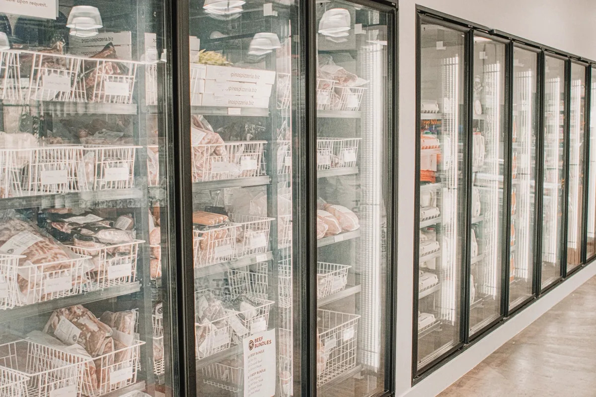
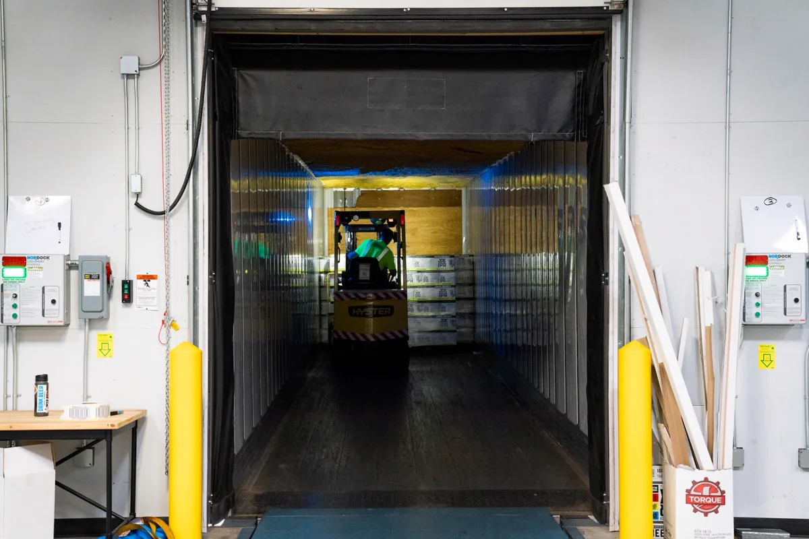

Câmara fria mal dimensionada custa caro todo mês
Câmara fria é um dos poucos investimentos em que o erro de projeto aparece na conta de energia todo mês, sem parar. Painel fino demais, evaporador subdimensionado, porta com vedação ruim ou piso sem barreira térmica: o compressor compensa trabalhando mais, e o cliente paga a diferença enquanto o equipamento durar.
Trabalhamos com carga térmica calculada, não com estimativa por metro cúbico. Atendemos restaurantes, supermercados, açougues, distribuidoras, indústrias de alimentos, cozinhas industriais, farmácias e laboratórios em Vitória, Vila Velha, Serra, Cariacica e região.
O que entra no projeto e na execução
Cálculo de carga térmica
Levantamento do produto, da temperatura de entrada e de conservação, do giro diário, do número de aberturas de porta, da iluminação e das pessoas que circulam. Só depois disso se define capacidade de equipamento, espessura de painel e vazão de ar.
Painel isotérmico e vedação
Painéis com núcleo em PIR ou PUR, espessura conforme a temperatura de operação, encaixe com vedação contínua, cantoneiras sanitárias e acabamento higienizável. A vedação é o item que mais falha na prática — e é o mais barato de fazer bem na montagem.
Piso, impermeabilização e barreira térmica
Em câmara de congelados, o piso exige isolamento e, dependendo do caso, sistema de aquecimento de base para evitar o congelamento do solo e o empolamento da laje. Em qualquer câmara, o piso precisa ser lavável, antiderrapante e com caimento definido para o ralo.
Sistema de refrigeração
Unidade condensadora, evaporadores, linha de sucção e de líquido isoladas, válvula de expansão, degelo, dreno com sifão e aquecimento quando necessário. Instalação com vácuo, estanqueidade verificada e carga de fluido controlada — atalho nessa etapa é vazamento garantido.
Porta frigorífica e acessórios
Porta de giro ou de correr com vedação, resistência de batente em congelados, dispositivo de abertura interna (item de segurança que não pode faltar), cortina de ar ou de lâminas, iluminação estanque e sinalização.
Controle, registro e alarme
Controlador de temperatura, sensor calibrado, registro por datalogger, alarme de temperatura alta e de porta aberta. O registro é o que sustenta a câmara em vistoria da vigilância sanitária e em auditoria de cliente.

Parâmetros usuais por tipo de produto
| Produto | Faixa usual de temperatura | Ponto de atenção |
|---|---|---|
| Congelados em geral | -18 °C ou menos | Piso com barreira térmica e degelo robusto |
| Carnes resfriadas | 0 °C a 4 °C | Umidade relativa alta para evitar perda de peso |
| Laticínios e frios | 0 °C a 6 °C | Estabilidade — oscilação forma condensado na embalagem |
| Hortifrúti | Varia muito por espécie | Calor de respiração e sensibilidade ao frio de alguns itens |
| Pescados | Próximo de 0 °C ou congelado | Drenagem e higienização reforçadas |
| Bebidas e insumos | 4 °C a 12 °C | Alta rotatividade de porta |
| Medicamentos e imunobiológicos | 2 °C a 8 °C | Registro contínuo, alarme e plano de contingência |
As faixas acima são referência de projeto. A temperatura que vale é sempre a definida pela legislação sanitária aplicável ao produto e pelo fabricante ou fornecedor.
Manutenção preventiva de câmara fria
- Mensal: limpeza de evaporador e condensador, verificação de dreno, conferência de vedação de porta e leitura de temperatura;
- Trimestral: verificação de pressões, superaquecimento e sub-resfriamento, teste de degelo, revisão elétrica do quadro;
- Semestral: pesquisa de vazamento de fluido, aferição de sensores, revisão de painel e cantoneiras, teste de alarme;
- Anual: revisão geral do sistema, calibração de instrumentos e laudo do estado da instalação.
Em edificação com sistema de climatização de ambiente, esse plano anda junto do PMOC, que trata da qualidade do ar interior. São documentos distintos, com finalidades distintas, e a fiscalização pode cobrar os dois.

Problemas frequentes e o que costuma estar por trás
| Sintoma | Causa provável |
|---|---|
| Gelo excessivo no evaporador | Degelo mal ajustado, vedação ruim ou dreno entupido |
| Compressor não desliga | Carga térmica acima do projeto, vazamento de fluido ou condensador sujo |
| Água no piso da câmara | Dreno sem sifão, entupido ou com caimento errado |
| Temperatura oscilando | Sensor mal posicionado, porta aberta demais, evaporador subdimensionado |
| Painel estufado ou piso levantado | Congelamento do solo por falta de barreira térmica |
| Conta de energia subindo | Perda de isolamento, vedação ressecada ou condensador obstruído |
| Odor e mofo | Higienização insuficiente, dreno com retorno e umidade infiltrada no painel |
Perguntas frequentes sobre câmara fria
Como se dimensiona uma câmara fria?
Pelo cálculo de carga térmica, que soma tudo o que joga calor para dentro: transmissão pelas paredes, teto e piso; infiltração pela abertura de porta; calor do produto que entra ainda quente e do seu calor de respiração, no caso de frutas e hortaliças; calor de pessoas, iluminação, motores dos evaporadores e do degelo. A partir desse total define-se a capacidade do equipamento, a espessura do painel e o número de trocas de ar. Câmara vendida só pelo volume em metros cúbicos, sem carga térmica, é chute — e o resultado costuma ser compressor trabalhando sem parar.
Qual a diferença entre câmara de resfriados e de congelados?
Resfriados operam em torno de 0 °C a 10 °C, conforme o produto, e servem para conservar carne fresca, laticínio, hortifrúti e bebidas. Congelados operam abaixo de -18 °C. A diferença não é só de temperatura: congelados exigem painel mais espesso, sistema de degelo mais robusto, atenção especial ao piso — que precisa de barreira térmica para não congelar o solo e levantar por empolamento — e porta com resistência de aquecimento no batente para não colar.
Preciso registrar a temperatura da câmara fria?
Sim, sempre que houver alimento envolvido. A vigilância sanitária cobra registro de temperatura como parte do controle de boas práticas: termômetro calibrado, leitura em frequência definida e registro rastreável, em planilha ou por datalogger. Em auditoria de rede e em contrato de fornecimento, o registro contínuo com alarme costuma ser exigência contratual, não recomendação.
Por que a câmara fria acumula gelo no evaporador?
Gelo excessivo no evaporador quase sempre aponta para entrada de umidade ou degelo mal ajustado. As causas mais comuns são vedação de porta ressecada, porta ficando aberta durante a operação, cortina de ar ausente ou danificada, dreno entupido ou sem sifão, ciclo de degelo com frequência ou duração inadequadas e carga térmica acima do projeto. O gelo reduz a troca térmica, o compressor trabalha mais, a conta de energia sobe e a temperatura do produto começa a oscilar.
Vocês fazem manutenção de câmara que já existe?
Sim. Fazemos diagnóstico de câmara existente, correção de vedação e de painel danificado, revisão do sistema de refrigeração, ajuste de degelo e de controle, reparo de dreno e adequação de piso e de porta. Também emitimos laudo do estado da instalação quando a câmara precisa passar por vistoria sanitária ou por auditoria de cliente.
Câmara fria na Grande Vitória
Projeto, montagem e manutenção para o comércio de alimentos e para a indústria da região:
Vai montar ou recuperar uma câmara?
Informe o produto, o volume e a temperatura de operação. Retornamos com carga térmica e proposta.